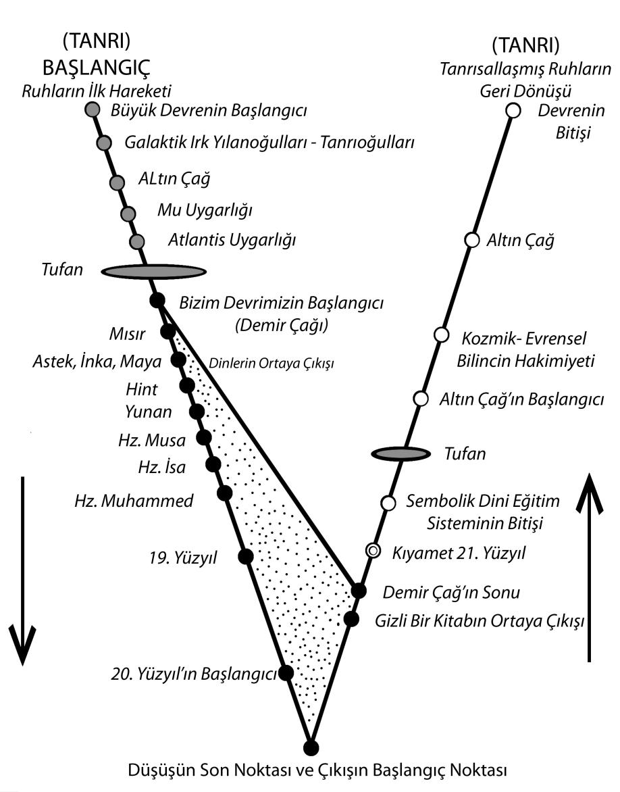

“Menfis Güneş Mabedi”nin inisiyesi, artık farklı bir üslupla “sırlar bilgisi”ni perdeleyerek, insanlığa aktarma görevine başlıyordu... Bu nokta oldukça önemlidir... Az önce Musa’nın “Midyan Mabedi”nde insanlığın geçmiş devirlerine ilişkin ezoterik kaynakları uzun bir süre incelediğinden söz etmiştik. Bu kaynaklardan, insanlığın aşamalı olarak “aşağıya iniş süreci”ni yaşamakta olduğunu tüm açıklığıyla görmüş olması muhtemeldir. Kaldı ki Mısır’daki eğitiminde de bu bilgilere daha önce ulaşmış da olabilir. Nerede ulaşmış olursa olsun, burada bizi ilgilendiren, bu son derece önemli bilginin kendisi tarafından biliniyor olmasıdır.
Eğer insanlığın o devirlerde “aşağıya iniş süreci”ni tamamlaması gerektiği bilgisini bilmiyor olsaydı, edindiği “sırlar bilgisi”ni tüm açıklığıyla insanlığa aktarmaya kalkışabilirdi. Ancak onun böyle bir davranış içine girmediğini tam tersine, “sırlar bilgisi”ni perdeleyerek, üstünü örterek hatta şifrelendirerek aktardığını görüyoruz. Yani kendisi de açıkça biliyordu ki, insanlar bu bilgilerden uzak kalmalıydı. Aksi takdirde “aşağıya iniş süreci”nin tamamlanması mümkün olamazdı... O da, kendisinden sonra gelecekler gibi sırların üzerini örtmeye başladı...
Böylelikle dünya yeni bir devreye doğru hızla ilerleyişini sürdürüyor ve insanlığın aşağıya inişini tamamlayacak olan son üç büyük dinden biri kuruluyordu...
Bu yeni başlayacak olan devrenin ilk adımıydı... Son adım Arabistan’dan gelecekti...